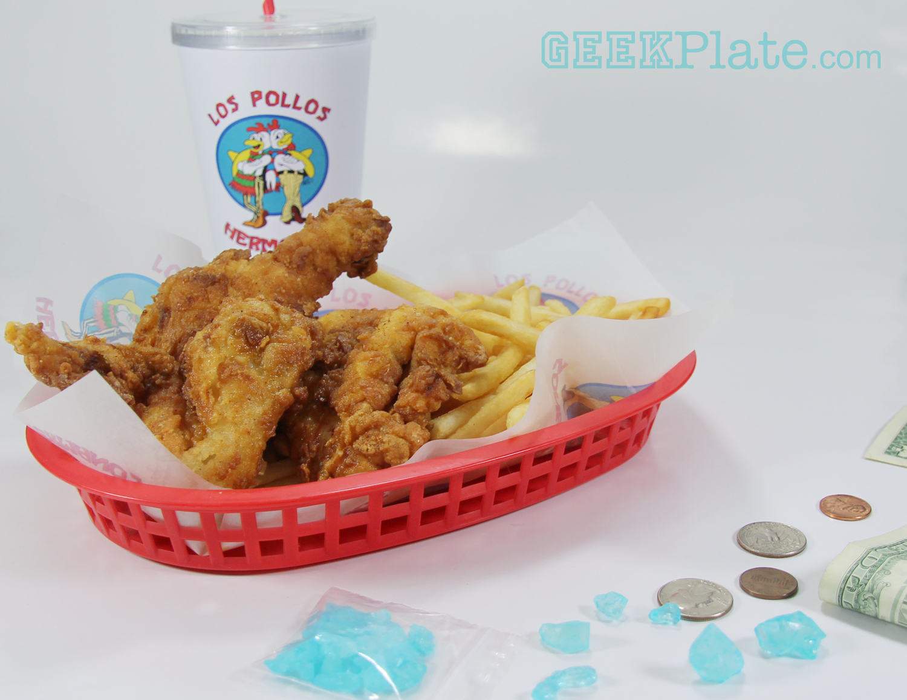

Los Pollos Hermanos Chicken

Los Pollos Hermanos chicken is a delicacy so sought after that a heist was needed to simply obtain the recipe! Try at your own risk...
Ingredients Needed:
- 15 grams cayenne pepper
- 10 grams aleppo pepper
- 10 grams ground coriander
- 15 grams red pepper flakes, pulverized
- 15 grams kosher salt
- chicken, cut into pieces
- 100 grams all-purpose flour
- 100 grams cornstarch
- 250 grams water
- 30 grams vodka
- 2 large eggs
- frying oil
Recipe To Prepare:
- Combine cayenne pepper, aleppo pepper, ground coriander, pulverized red pepper flakes, and kosher salt
- Sprinkle spice mixture on both sides of the chicken pieces
- Let the chicken rest in the refrigerator for 4 to 24 hours
- Mix all-purpose flour, cornstarch, a sprinkle of the spice mixture, water, vodka and eggs
- Coat chicken pieces in flour before dunking in the batter
- Deep fry in 375 degree Fahrenheit oil for 7 to 10 minutes until golden brown
- Serve with curly fries